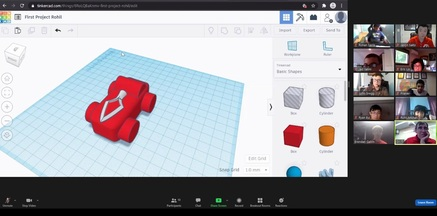

Robotics Summer Camp
We received 20 kids for the week long summer camp. They started off Day 1 by watching a piece being cut out on the laser printer. They seemed enthusiastic about creating their own piece. After everyone was settled, we let them get to know each other through a series of Icebreakers and games. We then continued with laser cutting and guided the kids through setting up the first CADing software, Gravit. Gravit is a design software that allows the kids to get their first taste of CADing. It is relatively simple, and involves using shapes and text boxes and importing pictures to allow them to turn ideas into reality with the laser cutter. We taught them the basic skills to use Gravit by having one coach (coaches are members of the team who are volunteering their time for the camp) run an interactive lesson. The kids are each provided a computer to follow along with the coach as he demonstrates the skills on the projector.
 Our first major activity for the campers is a competition to see which group will make the most durable bridge out of popsicle sticks, tape, and super glue. Before the campers get the glue for actually constructing the bridge, they have to plan out which materials they want used, as well as figuring out the overall blueprint. This allowed the campers to get experience with the engineering process and demonstrate the importance of planning in the Engineering Process that we experience every season when planning the construction of our Robot.
The campers are given a limited amount of sticks to use to build their bridges.
Our first major activity for the campers is a competition to see which group will make the most durable bridge out of popsicle sticks, tape, and super glue. Before the campers get the glue for actually constructing the bridge, they have to plan out which materials they want used, as well as figuring out the overall blueprint. This allowed the campers to get experience with the engineering process and demonstrate the importance of planning in the Engineering Process that we experience every season when planning the construction of our Robot.
The campers are given a limited amount of sticks to use to build their bridges.
We gave them helpful tips and building pointers on what makes a durable bridge. We mentioned using triangular structures and how symmetry would help prevent buckling.

We tested the bridges after letting them finish drying over night. We tested the strength of each bridge by first having the bridge span over the gap between two tables. Then, we placed a wooden block on the base of the bridge in order to distribute the weight across the length of the bridge evenly. After that, we connected a string to the wooden block and hung it down below the bridge, connecting it to a larger platform on which we slowly placed weights.
2020
This year, due to Covid-19, we moved the entire camp online. We sent Elegoo Car kits and Arduino Starter pack kits to all participants. Then throughout the week helped them build and design them. We also taught about CAD and the different processes involved to do that.
When selecting a robot kit, the language in which it would be programmed was very important. We wanted a language that we could teach and the students could understand, so selected the Elegoo Arduino kit because it was able to be customized and we would be able to work with Arduino circuitry. This meant that we would have to work with Arduino for programming. .
We planned to teach the kids Java Programming. Why? The Arduino IDE uses a series of C and C++ statements, which are similar enough to Java for the knowledge to be transferred over. Java is also easy to work with using a compiler such as CodeChef and the instructors were very familiar with Java. That meant they could deal with errors and issues, things they may not have been able to deal with had we been working with Arduino.
How did we teach the class? Initially, we are going to have multiple lecture sessions, but as time went on we realized some students said they were understanding the concepts when in reality they were falling behind. We adapted our teaching style to accommodate these students. We gave everyone lectures and afterward, we gave them projects to work on to demonstrate their mastery of the concepts taught in class that day.
 We debated over which CAD software to use, options would have included Onshape, Inventor, Fusion360 or Tinkercad. Unfortunatley, due to the steep prices, Tinkercad, a free webbased designer was the only viable choice. Based on other classes we have taken, the CAD team wanted to focus less on boring lectures and presentations and instead use more activities that day by day, built up the students’ levels of mastery in CAD. We also wanted to focus on creating a one on one connections with our students. We did this through CAD projects where students were given objectives and topics and made designs based on the topic we chose.